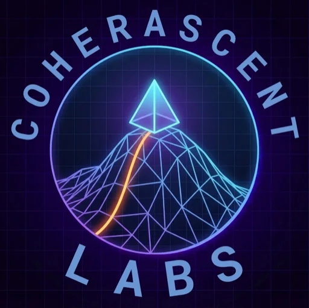

Projects

Malestrum: The Third Phase
A podcast exploring the civilizational and personal Third Phase we are all navigating. Co-hosted with my son Griffin Rutherford, the engineer and technical founder building Lune Synth, it is the conversation between Phase One and Phase Three — a 24-year-old AI builder and a 74-year-old former global CEO trying to make sense of a world being remade by artificial intelligence, economic disruption, and generational collision.
New episodes and companion notes published regularly.
Visit Malestrum →
Breakwater Operations
Strategic AI and business advisory for organizations in northern New Mexico. Co-founded with Griffin, a technical founder and engineer, Breakwater helps nonprofits, churches, small businesses, and mission-driven organizations cut through AI hype and make decisions that actually fit their situation. No implementation shortcuts. No vendor relationships. Honest counsel from people who have built and operated real things.
Visit Breakwater →
Lune Synth / Coherascent Labs
Griffin leads Coherascent Labs and Lune Synth, and Barry serves as an advisor to the work. Coherascent Labs advances well architected AI research while building Lune Synth, an anti-slop learning app for handwritten reasoning, rigorous grading, and adaptive practice. Barry's role is strategic counsel around operations, positioning, and the broader questions of truth-aligned AI, education, and what serious tools can become.